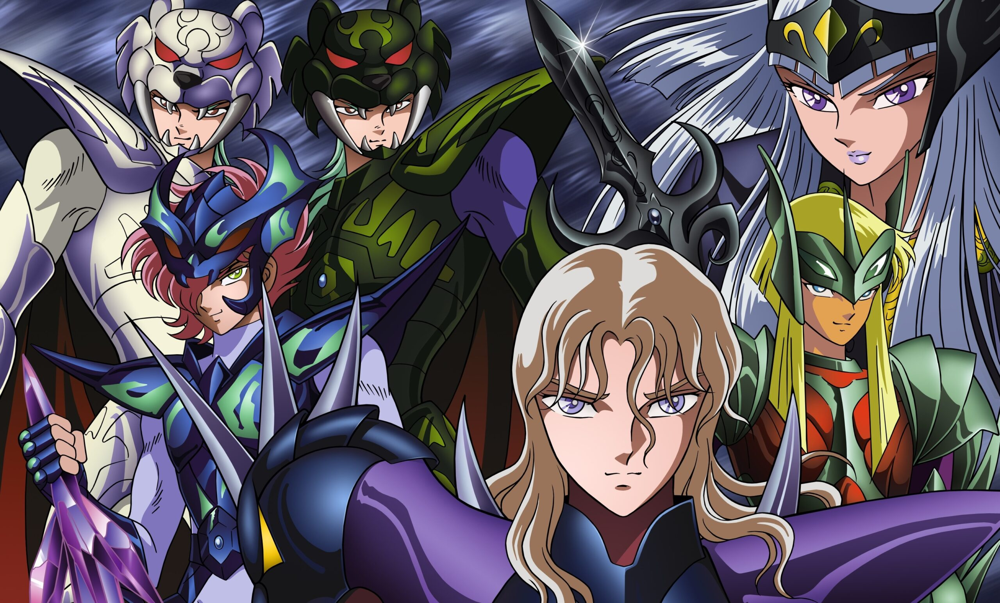
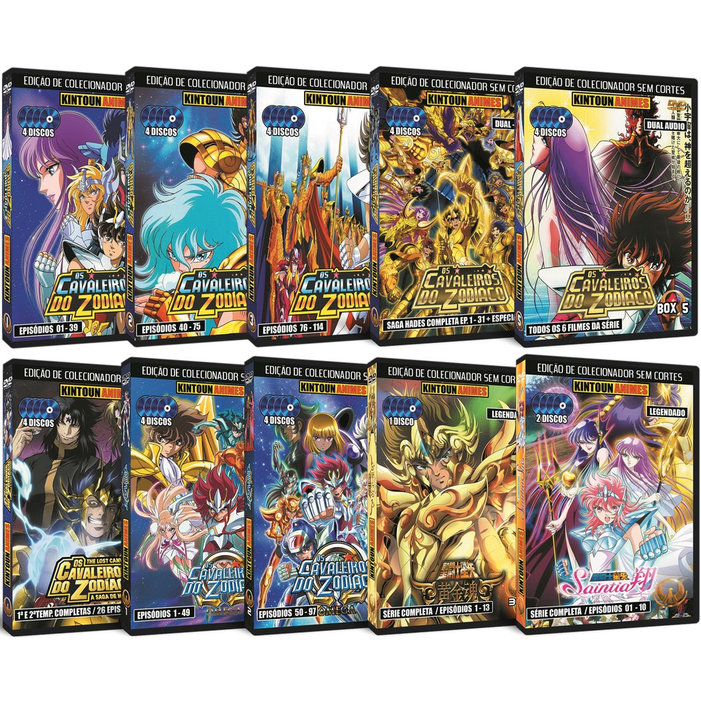

| Saga | Episódios | Oponente Principal | Resumo da Trama |
|---|---|---|---|
| Guerra Galáctica & Cavaleiros Negros | 1 a 15 | Ikki de Fênix | Torneio organizado por Saori Kido pela Armadura de Ouro de Sagitário, interrompido pelos Cavaleiros Negros. |
| Cavaleiros de Prata | 16 a 39 | Mestre do Santuário / Pratas | O Santuário envia assassinos da patente de Prata para eliminar os Cavaleiros de Bronze considerados traidores. |
| Santuário (As 12 Casas) | 40 a 73 | Saga de Gêmeos | Os Cavaleiros de Bronze têm 12 horas para cruzar as doze casas zodiacais, derrotar os Cavaleiros de Ouro e salvar Saori de uma flecha dourada. |
| Asgard | 74 a 99 | Hilda de Polaris | Saga exclusiva da animação na qual enfrentam os Guerreiros Deuses para livrar a representante de Odin de um anel amaldiçoado. |
| Poseidon | 100 a 114 | Poseidon (Julian Solo) | O deus dos mares desperta e tenta inundar a Terra. Os heróis devem destruir os pilares dos sete oceanos guardados pelos Marinas. |
| Hades (Santuário, Inferno e Elíseos) | 31 OVAs | Hades (Deus do Submundo) | A maior das Guerras Santas. Os Cavaleiros invadem o mundo dos mortos para derrotar Hades e salvar o planeta do Grande Eclipse. |

Além das temporadas da televisão, a franquia lançou diversos filmes de animação com batalhas contra divindades e guerreiros mitológicos:
| Ano | Título do Filme | Inimigo Principal |
|---|---|---|
| 1987 | Os Cavaleiros do Zodíaco: O Remake da Deusa Éris | Éris (Deusa da Discórdia) e Cavaleiros Fantasmas |
| 1988 | A Grande Batalha dos Deuses | Derbal (Representante de Odin) |
| 1988 | A Lenda dos Defensores de Atena | Abel (Deus do Sol) e Cavaleiros de Coroa do Sol |
| 1989 | Os Guerreiros do Armagedon | Lúcifer e os Demônios da Aniquilação |
| 2004 | Prólogo do Céu | Artemis (Deusa da Lua) e Anjos Celestiais |
© Todos os direitos reservados - Miguel Oliveira